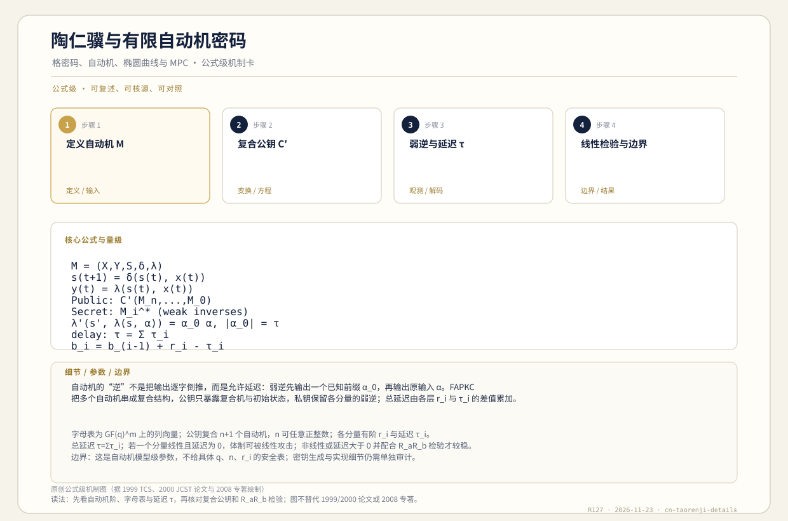

原理与机制
中国密码史：陶仁骥与有限自动机密码（Tao Renji and Finite Automata Cryptography）。### 自动机与弱逆
有限自动机 (M=(X,Y,S,\delta,\lambda)) 的状态转移与输出是 (s(t+1)=\delta(s(t),x(t)))、(y(t)=\lambda(s(t),x(t)))。FAPKC 的公钥不是单个自动机，而是复合自动机 (C'(M_n,\ldots,M_0))；私钥是各分量的弱逆 (M_i^*)。### 延迟为什么是结构参数
弱逆不要求逐字立即还原，而允许先输出一个已知前缀：(\lambda'(s',\lambda(s,\alpha))=\alpha_0\alpha)，其中 (|\alpha_0|=\tau)。总延迟按 (\tau=\sum\tau_i) 累加，密钥生成还要满足 (b_i=b_{i-1}+r_i-\tau_i)。这使“解密”变成一个带前缀延迟的状态恢复问题，而不是普通置换。

为什么重要
FAPKC 把有限自动机的可逆性理论变成公钥密码：公钥是复合自动机，私钥是弱逆，安全性取决于复合结构、延迟与线性检验。它是中国学者在公钥密码早期的一条独立路线，和 RSA、椭圆曲线、格密码的代数假设不同，读法也必须不同。
应用与实例
1.先标出字母表、状态集、阶 r_i 与延迟 τ_i；这些是模型参数，不是实现细节。2.检查公钥是否只含复合机与初始状态，私钥是否保留弱逆。3.用弱逆条件验证解密只差一个已知前缀，且总延迟与密钥生成公式一致。4.检查 R_aR_b 线性检验是否排除了线性/准线性弱密钥。5.记录密钥生成器版本与攻击假设；不能只拿一个复合层数当作安全强度。### 不能怎么用
不能把“弱逆存在”说成“任何人都不能求逆”；不能忽略零延迟与线性分量；不能把 1999 年的统一体制当成所有 FAPKC 变体的安全证明；不能把模型公式当成具体实现的安全审计。
边界与攻击面
1.线性或准线性分量：若一个分量线性且延迟为 0，体制可被线性 R_aR_b 攻击。2.密钥生成：弱密钥未被检验排除时，公钥可被分解或求弱逆。3.延迟参数：τ_i 与 r_i 不匹配会破坏解密的前缀条件。4.复合结构：n+1 个自动机的组合不是简单串联，初始状态与总延迟必须同步。5.攻击演进：1999 论文列出的线性攻击与 2000 论文的输入树搜索只是当时已知面，不覆盖后来所有密码分析。
历史与背景
陶仁骥与陈世华 1985 年在《计算机学报》第 8 卷提出有限自动机公钥密码与数字签名；1999 年 Theoretical Computer Science 226:143–172 把 FAPKC0、FAPKC1、FAPKC3、FAPKC4 统一为 n+1 个自动机的复合体制；2000 年 JCST 15(4) 用输入树估计穷举与随机搜索；2008 年清华大学出版社与 Springer 出版《Finite Automata and Application to Cryptography》。
逐步示例与核验
事件时间线模型
背景 → 过程 → 结果 → 争议。背景写此前技术/制度；过程写可核参与者与时间；结果写后续标准、机器、课程或政策；争议写二手叙述与一手材料的差距。
参考出处
- Wikipedia search entry for 陶仁骥与有限自动机密码. https://zh.wikipedia.org/w/index.php?search=%E9%99%B6%E4%BB%81%E9%AA%A5%E4%B8%8E%E6%9C%89%E9%99%90%E8%87%AA%E5%8A%A8%E6%9C%BA%E5%AF%86%E7%A0%81
- 《密码简史：穿越远古 展望未来》（杨义先、钮心忻，电子工业出版社，2020，ISBN 9787121398711）. https://book.cppinfo.cn/Encyclopedias/home/index?id=3730464